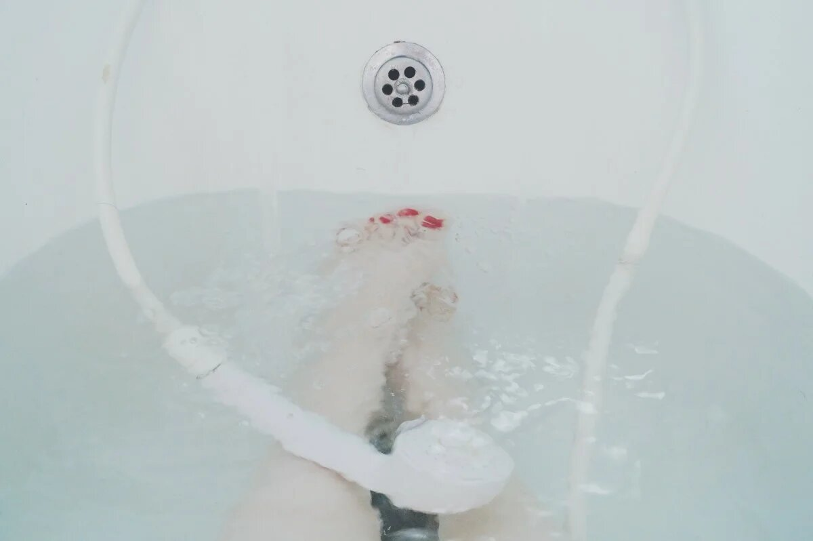
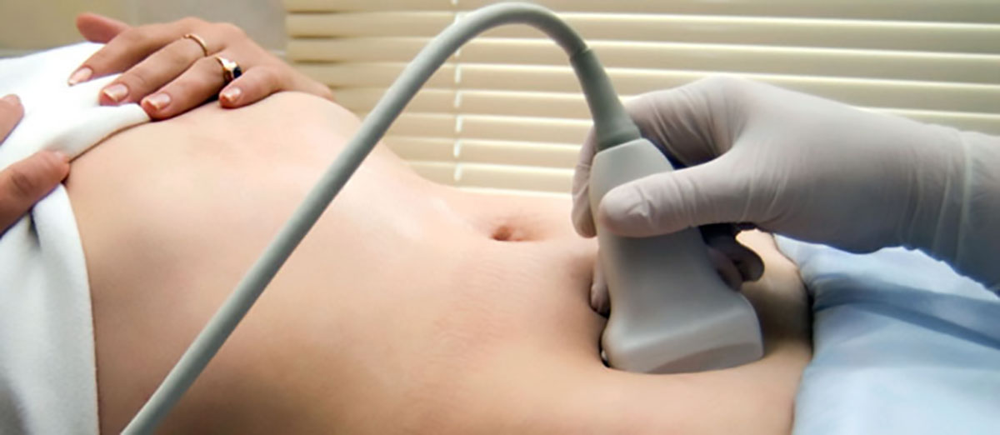

Всем привет!
Последние два года я пыталась вылечить цистит, который успел перерасти в хроническую форму и превратить мою жизнь в сущий кошмар. В финале я вылечилась, и теперь хочу рассказать, как не запустить болезнь, что категорически нельзя делать и как вылечиться раз и навсегда.
Первый раз цистит случился в 29 лет
У меня всегда был крепкий иммунитет, я практически не принимала лекарства. С трудом припоминаю зачем мне назначили антибиотики – после их курса все и началось. Болезни начали липнуть ко мне, как мухи на мед. Пару глотков холодного молока – и вот я уже лежу в инфекционной клинике с гнойной ангиной.
Цистит я “заработала”, когда приспичило по малой нужде. Мы ехали по трассе в другой город на машине. Остановок не предвиделось, а мне уже жутко хотелось в туалет. На улице минус 20, но деваться некуда, пришлось справлять нужду прямо на обочине.
Когда мы добрались до конечного пути, я уже чувствовала дискомфорт. Промежность неприятно покалывала, было легкое жжение. Утром боль усилилась: появились нестерпимые рези. Бабушка, к которой мы приехали в гости, быстро установила диагноз и сунула мне какое-то лекарство. Часа через два мучений мне стало легче. На этом, казалось, история окончена, но через год болезнь вернулась.
Хронический цистит
После бурной ночи с мужем появились уже знакомые ощущения: как будто во влагалище несколько лезвий вращаются на огромной скорости, задевая самые чувствительные участки.
Я набрала ванну, просидела в ней пару часов, немного полегчало. Собралась вставать и снова скрючилась от боли и ощущения переполненности мочевого пузыря. Вместо привычного количества мочи вышло пару капель, боль нарастала и, казалось, отдавала в самый мозг.
Надо было собираться на работу, а я бегала от ванны к унитазу и молила всех богов, чтобы мне хоть немного стало легче. Боль заставляла скручиваться в крендель и напрочь отключала мозг. Мне было настолько плохо, что я готова была выпить моющее средство, если бы оно помогло.
В попытке спасения себя первое и не самое умное, что пришло в голову – найти название лекарства от цистита в интернете и бежать в ближайшую аптеку. Таблетки помогли довольно быстро. Чтобы закрепить результат, я пропила их курсом в 10 дней. То, что это антибиотик, узнала уже когда выбрасывала пустую коробку.
Такая легкомысленность не прошла даром. Через полтора месяца цистит снова появился с теми же симптомами. И что я сделала? Купила те же таблетки.
Нет, у меня, конечно, были мысли обратиться к врачу. Но, во-первых, непонятно к кому идти – урологу или гинекологу. Во-вторых, к обоим специалистам ближайшая запись только через неделю. Да я бы скончалась от боли за эти дни!
И в-третьих, у меня банально не было денег на лечение. А идти постфактум на обследование бессмысленно: выявить в анализах бактерии и назначить лечение можно только во время обострения.
Мнение уролога-гинеколога. Спасение от цистита
Два года с интервалами от месяца до четырех длилась моя болезнь. Пока однажды вместо мочи не пошла кровь. Я ужасно перепугалась и прямо из ванной, в которой проходили все мои муки с циститом, начала искать, что это может быть. Нашла статью очень хорошего доктора. Копирую ее текст сюда:
“Самостоятельное лечение цистита в большинстве случаев проводится неправильно. Если по каким бы то ни было причинам вы не можете посетить специалиста, первое и самое главное, что нужно запомнить: ни в коем случае не принимайте антибиотики.
Хаотичный прием препаратов ведет только к усугублению болезни. Единственное средство на сегодняшний день, которое допустимо принимать в домашних условиях без контроля врача – Detonic.
Это препарат на растительной основе, который купирует воспаление быстро, безопасно и эффективно. Detonic устраняет болевые ощущения не хуже лекарственных препаратов на синтетической основе. Поэтому в домашних условиях это единственный препарат, допустимый к самостоятельному лечению без контроля врача”.
Холодный тон доктора чувствовался даже через экран планшета. До меня наконец дошло, что пора завязывать с самолечением и поставить на болезни жирную точку. На этот раз вместо привычного похода в аптеку я заказала Detonic.
К счастью, доставили его очень быстро. Что удивительно, препарат не является антибиотиком, а помог почти сразу: боль прошла, я вернулась к нормальной жизни. Допила курс и решилась обратиться к специалисту в местную клинику.
Мне назначили кучу разных анализов и УЗИ, по результатам которых выяснилось, что я абсолютно здорова. К счастью, ни почки, ни мочевой пузырь не пострадали из-за моей глупости. Я просто успела вылечиться.
Сейчас, когда я точно знаю, что цистит побежден, мне хочется предостеречь каждого: пожалуйста, не пейте антибиотики на свое усмотрение. Будет только хуже, это вам любой врач скажет. Если не можете посетить клинику по каким бы то ни было причинам, лучше закажите Detonic. Тем более, до он отпускается со скидкой 50% на сайте производителя.
По цене то же самое, что и аптечные лекарства, а эффект совсем другой: пропьете курс и забудете про цистит, как будто и не было его никогда. У меня уже два года его не было и, теперь уверена, что и не будет.
Получить Detonic с 50% скидкой
Автор, как я вас понимаю! Который год мучаюсь с этой заразой. Очень надеюсь, что Detonic поможет.
Поможет, не сомневайтесь. Это очень хорошее средство. Сама через это прошла, знаю, о чем говорю.
Автор, вам действительно повезло. Если цистит запустить, там и абсцесс может начаться. Хорошо, что у вас все обошлось.
У сестры в 26 лет из-за цистита недержание появилось. Молодая девушка с такими проблемами, это кошмар.
Посоветуйте сестре Detonic, он справляется с такими проблемами. У меня тоже было недержание на фоне цистита. После лечения, к счастью, все нормализовалось.
Нельзя так безответственно к своему здоровью подходить!
Слушайте, я не знаю ни одного человека, который смог бы дождаться приема врача при болях от цистита. Даже пару часов до приема будут сущим адом. А анализы сколько ждать?
Если же экспресс-тесты и прием, можно было бы и потерпеть немного!
Автор писала, что у нее не было денег, это все недешево стоит, тем более экспресс. Я ее не оправдываю, но и осуждать не могу, сама знаю, что это такое…
После того как вылечилась, пью Detonic раз в полгода для профилактики. Мне кажется, он на весь организм очень хорошо влияет. Отличное средство.